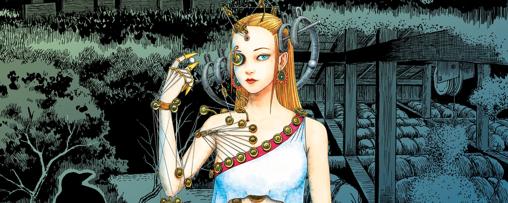
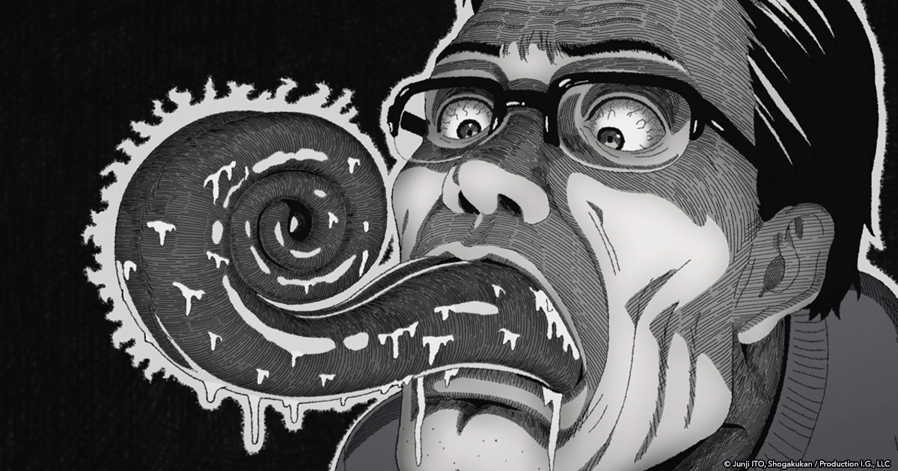
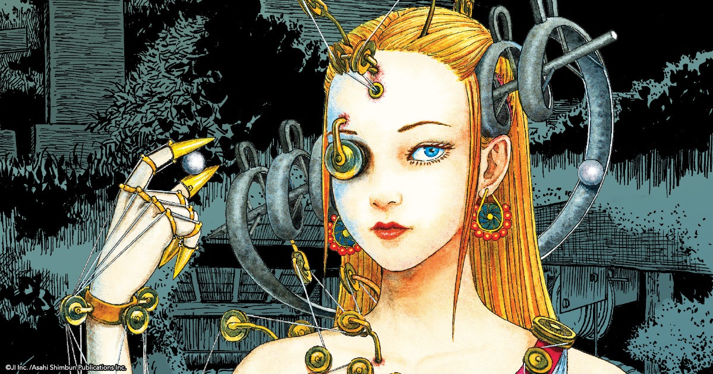
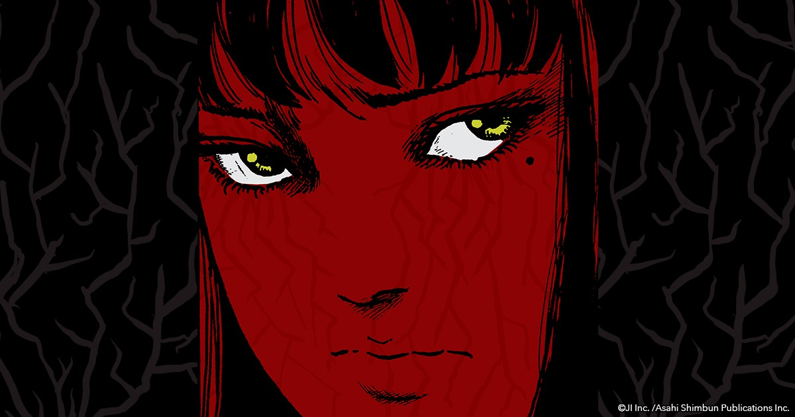
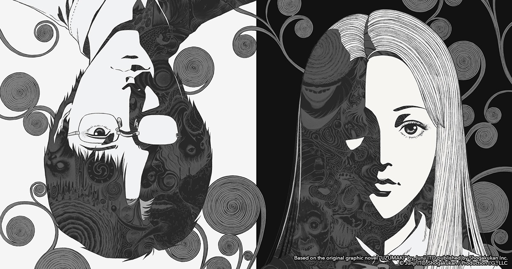
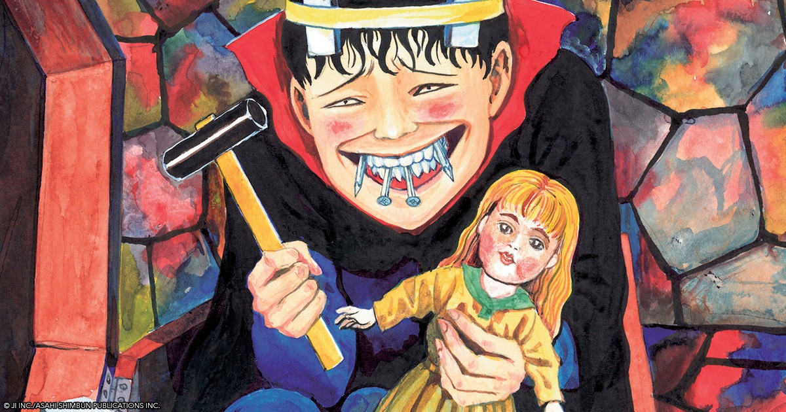
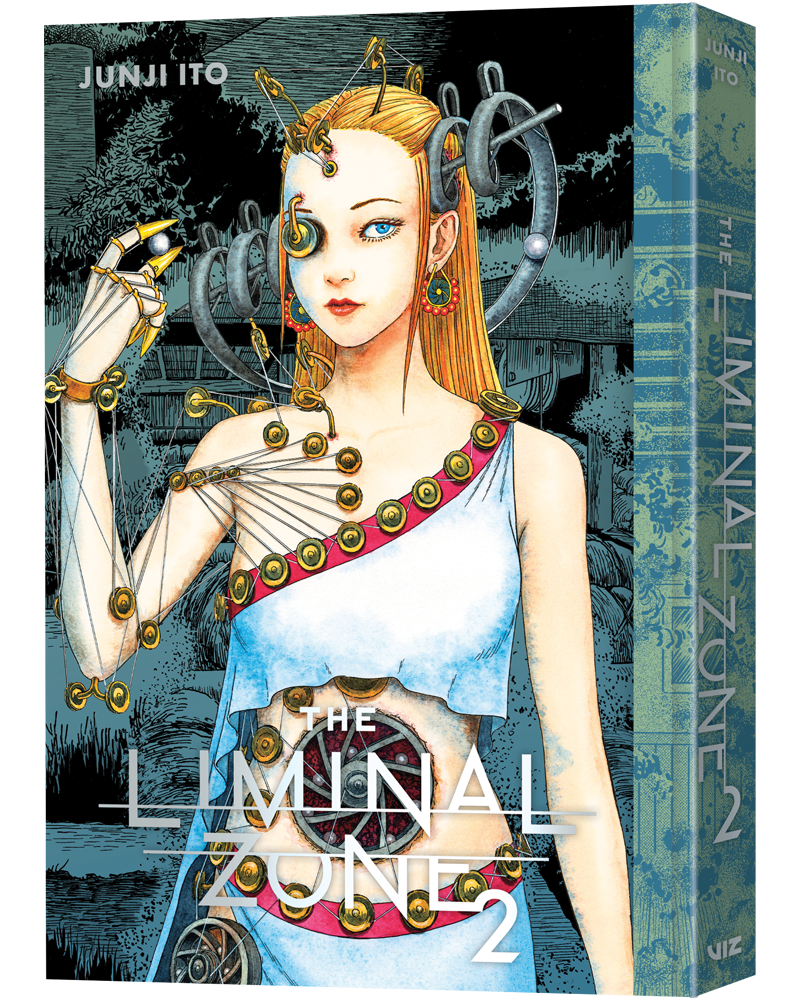

Junji Ito

Jump to: Series
Welcome to the Ito-verse of cosmic horror.
Junji Ito
Junji Ito seamlessly weaves the unknowable into cosmic horrors that exceed the boundaries of manga. His works subvert the genre by bending, twisting, and blending it far beyond the familiar, resulting in the greatest chilling, thrilling, and grotesquely horrific storytelling of our time. Welcome to the Ito-verse.
Four-time Eisner Award-winning creator Junji Ito made his professional manga debut in 1987, and since then has gone on to be recognized as one of the greatest contemporary artists working in the horror genre. His titles include Tomie and Uzumaki, which have been adapted into live-action films; Gyo, which was adapted into an animated film; and his books Black Paradox, Deserter, Fragments of Horror, Frankenstein, Lovesickness, No Longer Human, Remina, Sensor, Shiver, Smashed, The Liminal Zone, and Venus in the Blind Spot, all of which are available from VIZ Media.
-
A Town Cursed by Spirals
Get the original art steelbook case for UZUMAKI: Animated TV Series.

Order now -
What Fear Awaits?
Complete the thriller collection from Junji Ito with The Liminal Zone, Vol. 2!

Read preview -
A Sneak Peek at Uncanny: The Origins of Fear
Read a free excerpt of Junji Ito's new memoir!

Learn more -
The Spiral Is Inescapable
Spiral into Junji Ito’s masterpiece of horror with Uzumaki: Animated TV Series.

Order now -
Discover the True Meaning of Terror
Meet the horrifically hilarious antihero of the Ito-verse in Soichi: Junji Ito Story Collection.

Read preview
Read Junji Ito manga and books
The Liminal Zone, Vol. 2
A group of four university students stumbles upon a deserted, decaying village deep in the mountains only to find an enormous perpetual motion machine still at work there. Before they can answer the questions of who made it and to what end, the friends begin to disappear, one after the other. Another story sees the return of the strange Hikizuri siblings! A girl weighed down since birth by an invisible burden meets the odd siblings and moves in with them in order to understand the truth about herself. But after a string of bizarre occurrences, the siblings’ uncle appears on the scene…

Buy now